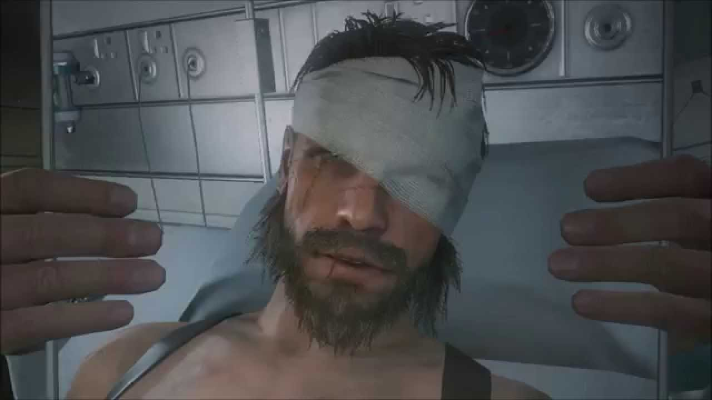
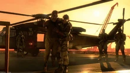
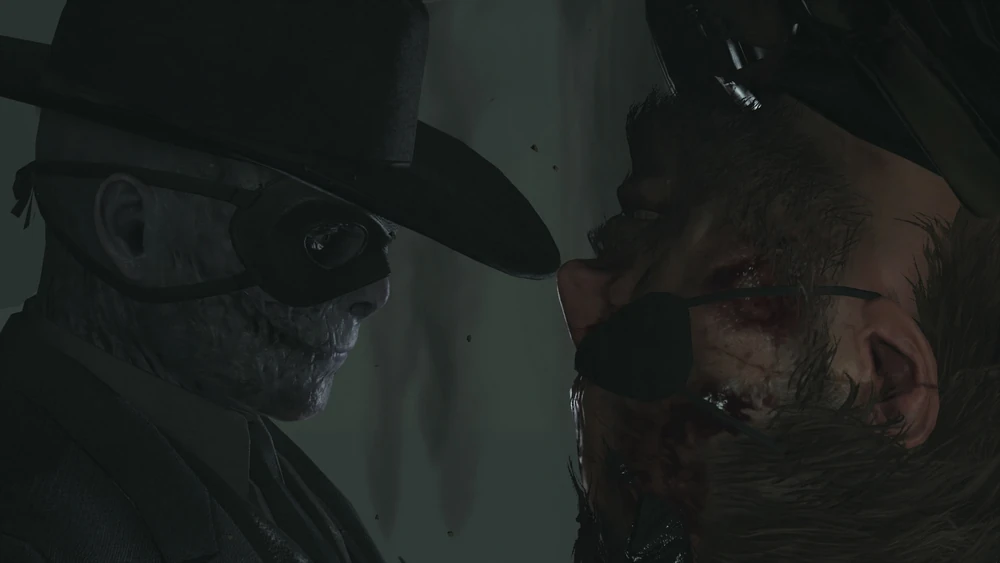
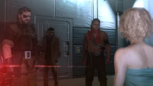

"Eu não vou espalhar sua tristeza para o mar sem coração. Eu sempre estarei com você. Plante suas raízes em mim. Eu não vou ver você acabar como cinzas. Vocês são todos diamantes. Faremos diamantes de suas cinzas , leve-os para a batalha conosco. Somos Diamond Dogs."
Punished "Venom" Snake , também conhecido como Big Boss , Ahab , V , ou Fantasma do Big Boss , era um médico de combate do Militaires Sans Frontières (MSF), que mais tarde se tornaria o comandante mercenário da Diamond Dogs e Outer Heaven como um dos tenentes mais confiáveis de Big Boss .
BIOGRAFIA
VIDA INICIAL
Venom Snake nasceu na Califórnia em 1932. Antes de 1975, ele serviu como membro do Militaires Sans Frontières, atuando como médico de combate. Muito mais tarde, Big Boss diria que o médico era "sempre o melhor homem que tínhamos", dando a entender que ele era um soldado incrivelmente capaz, bem como um médico de campo confiável. Sua lealdade a Big Boss tornou-se inquestionável.
"GROUND ZEROES"
Em 16 de março de 1975, o médico estava a bordo do helicóptero enviado para resgatar o comandante de MSF Big Boss e os prisioneiros de guerra Chico e Paz Ortega Andrade resgatados do Campo Omega em Cuba. Ele era um dos poucos membros da equipe de MSF ciente da situação de Paz e Chico, bem como da própria missão.
Durante o voo de volta à Mother Base , o médico identificou que uma bomba havia sido plantada no abdômen de Paz e realizou uma cirurgia de emergência sem anestésico para descartá-la antes de sua detonação. A bomba foi removida com sucesso, embora Paz tivesse desmaiado de dor imensa. O médico assegurou-se de que sua respiração estava estável e depois a costurou de volta.
O helicóptero voltou à Mother Base no momento em que estava sendo atacado pela força de ataque de Cipher, XOF. O médico permaneceu a bordo do helicóptero para fornecer ajuda médica a Paz e Chico enquanto Big Boss fornecia fogo de cobertura para os soldados de MSF que escapavam para o helicóptero, incluindo Kazuhira Miller. Enquanto eles escapavam, uma Paz assustada acordou, em pânico, enquanto tentava avisá-los de uma segunda bomba plantada dentro dela. Paz saltou do helicóptero pouco antes da segunda bomba explodir. O médico mergulhou na frente de Big Boss para protegê-lo da explosão, e o helicóptero colidiu com um helicóptero XOF próximo. O médico e Big Boss sobreviveram ao acidente, mas ambos ficaram em coma e o médico perdeu o braço no processo. Miller foi o único outro sobrevivente, escapando praticamente intacto.
COMA
O médico sofreu ferimentos graves com o acidente, com 108 agentes estrangeiros embutidos em seu corpo, enquanto seu braço esquerdo teve que ser amputado vários centímetros acima do pulso. O estilhaço foi removido, embora algumas peças localizadas perto de seu coração e dentro de seu córtex cerebral fossem muito arriscadas para serem extraídas.
Uma vez que o médico e Big Boss estavam estáveis o suficiente para o transporte, Zero fez com que EVA os transferisse para o Dhekelia SBA Memorial Hospital em Chipre. Esta informação foi suprimida para que sua localização permanecesse em segredo. Zero planejou e forneceu fundos para que o médico fosse moldado em uma imagem espelhada de Big Boss, tanto mental quanto fisicamente. A hipnagogia induzida imbuiu o médico com a mente de Big Boss, e uma cirurgia plástica foi realizada para dar a ele o rosto de Big Boss. Quando ele acordasse, o médico acreditaria que ele era o Big Boss. A palavra-código para quando a nova Serpente acordasse seria "V chegou".
Em 1977, um Zero enfraquecido visitou o gêmeo Big Boss antes de voltar a se esconder para sempre. Durante esse tempo, os EEGs dos Snakes mostraram níveis de atividade estáveis, mas não houve mudança. A equipe médica estava movendo seus músculos a cada quatro horas para mitigar a atrofia muscular.
"PHANTOM PAIN"
FUGA DO HOSPITAL
Venom Snake acordou pela primeira vez em 26 de fevereiro de 1984. Ao longo dos dias seguintes, a equipe médica de prontidão o acostumou lentamente com os fatos de sua condição: ele estava em coma há algum tempo e seu braço amputado bem como os estilhaços estranhos restantes que não puderam ser removidos de seu corpo. Eles contaram a Venom Snake sobre seus planos de fazer uma cirurgia plástica e um novo nome para que ele pudesse escapar daqueles que o queriam morto. O verdadeiro Big Boss acordou antes de Venom Snake e estava parado na cama do hospital ao lado dele, atrás de uma cortina e com o rosto coberto por bandagens. 
Vários dias após o despertar de Venom Snake, a equipe do hospital foi assassinada por um assassino XOF . Ela se moveu para atacar Snake, mas Big Boss o defendeu colocando fogo no assassino com álcool sanitário e um isqueiro. Big Boss, chamando a si mesmo de Ishmael, deu a Snake uma injeção de digoxina para aumentar seus batimentos cardíacos e fazê-lo se mover mais rápido. Ishmael passou a escoltar Snake para fora do hospital, evitando as equipes de ataque XOF, o misterioso Man on Fire e Tretij Rebenok.
A fuga da dupla foi interrompida quando seu veículo roubado caiu na margem de um rio. Venom Snake acordou sem nenhum sinal de Ishmael no veículo, mas Ocelot apareceu a cavalo para afastá-lo do perseguidor Man on Fire. Uma vez que Snake e Ocelot conseguiram escapar da perseguição do ser ardente, Ocelot disse a ele que seu próximo destino seria o Afeganistão , onde eles recrutariam Kazuhira Miller para ajudar nas próximas batalhas. Os dois embarcaram em um navio baleeiro em direção ao Afeganistão, enquanto Snake voltou a uma dieta normal, recuperou sua massa muscular e foi equipado com uma prótese biônica feita sob medida para compensar seu braço perdido. Ocelot ofereceu a ele o novo codinome de Venom Snake, passando a colocá-lo em dia com os eventos dos nove anos anteriores; notavelmente a guerra por procuração em andamento no Afeganistão, a fundação da Cipher, a localização de Zero e o projeto Les Enfants Terribles, que produziu Solid e Liquid Snake.
Afeganistao
Ocelot escoltou pessoalmente Snake até o campo missionário no norte de Cabul, no Afeganistão, a cavalo. Ele informou que o objetivo era resgatar Miller, que já estava em cativeiro soviético há dez dias. Snake se infiltrou com sucesso em Da Ghwandai Khar e resgatou Miller. Snake levou Miller para fora, mas eles foram emboscados pela Unidade Parasita, que foram responsáveis por capturar Miller em primeiro lugar. Depois de fugir de sua perseguição, Snake e Miller exfiltraram a área de helicóptero. No passeio de helicóptero, Miller implorou a Snake para ajudá-lo a se vingar de Cipher, e Venom Snake prontamente aceitou.
Juntos, eles pousaram em uma recém-construída Base Mãe, agora localizada nas águas das Seychelles. Lá, Venom Snake assumiu formalmente o comando do novo exército, que seria chamado de Diamond Dogs.
A fim de construir os recursos e a reputação da Diamond Dogs, Snake começou a realizar missões antissoviéticas da CIA no Afeganistão. Isso não só ajudaria os Diamond Dogs a expandir suas forças, mas também os levaria em direção a Cipher, que aparentemente estavam trabalhando em estreita colaboração com os soviéticos na área.
Uma dessas missões envolveu a eliminação de um comandante Spetsnaz responsável por uma operação de terra arrasada que aniquilou um grupo mujahideen conhecido como Hamid em Da Smasei Laman. Antes de neutralizá-lo, no entanto, Snake descobriu que o comandante supostamente não tinha nada a ver com os ataques a Da Smasei Laman, deixando o verdadeiro culpado um mistério.
Durante esse tempo, Snake também encontrou um filhote ferido e errante e o acolheu. Ocelot passaria a treinar o cão em uma unidade especial apelidada de DD que poderia ajudar Snake enquanto estivesse no campo.
Snake aceitou mais uma missão da CIA relacionada ao desaparecimento dos combatentes Hamid em Da Smasei Laman. A CIA estava fornecendo aos mujahideen lá um novo tipo de lançador de foguetes chamado Honey Bee, e agora havia o temor de que os soviéticos localizassem a arma e a usassem eles mesmos. Os soviéticos conseguiriam isso forçando o único sobrevivente do ataque ao Hamid, um prisioneiro mudo, a levá-los a ele.
Snake conseguiu localizar e adquirir a Honey Bee escondida em Da Smasei Laman. Curiosamente, a área não parecia ter sofrido nenhum dano de bombardeio, fazendo com que a narrativa de terra arrasada parecesse frágil. Ao se mover para escapar do forte, no entanto, Snake foi emboscado por Skull Face, encontrando-se nas mãos de um enorme braço mecânico de dentro da névoa. Quando o braço soltou Snake, ele se viu novamente cercado pela Unidade Parasita, que havia transformado todos os soldados soviéticos da base em suas marionetes semelhantes a zumbis. Snake derrotou a Unidade Parasita e escapou.
Algum tempo depois da luta em Da Smasei Laman, foi revelado que vários soldados de MSF que estavam ausentes quando a Mother Base foi atacada nove anos atrás ainda estavam lá fora. Eles pareciam ter enlouquecido e estavam vagando pelo mundo como zumbis, mas Snake poderia restaurá-los aos seus sentidos e recrutá-los para Diamond Dogs se assim o desejasse.
Depois de extrair o primeiro soldado errante, Komodo Dragon, ele deu a Snake uma foto dos bons velhos tempos em MSF. Snake logo encontraria um quarto na Plataforma Médica da Mother Base, onde aparentemente conheceu uma amnésica Paz , que curiosamente sobreviveu à bomba plantada em seu abdômen nove anos atrás. Ocelot e Miller confirmaram que realmente conseguiram removê-lo a tempo. Enquanto Snake continuava a encontrar velhos soldados de MSF, ele trazia suas fotos para Paz na tentativa de refrescar sua memória.
Snake e Diamond Dogs continuaram a ficar mais fortes à medida que realizavam mais missões anti-soviéticas no Afeganistão, coletando recursos, expandindo suas instalações e aumentando suas fileiras com voluntários e "recrutas" extraídos à força do campo. Depois de ser contratado por guerrilheiros Mujahideen locais, Snake eliminou três comandantes soviéticos , sabotou seus suprimentos de veículos blindados e assassinou um coronel recém-designado a caminho de Da Smasei Laman.
Um Mujahideen comissionou Snake para resgatar seu filho, um homem chamado Malak . Sua aldeia foi destruída e ele foi feito prisioneiro pelos soviéticos no Palácio Lamar Khaate . Snake se infiltrou nas defesas soviéticas e extraiu Malak. No entanto, ele soube que Malak não sabia quem era esse suposto pai e que sua aldeia havia sido destruída há algum tempo por uma doença misteriosa, não pelos soviéticos.
Diamond Dogs recebeu um sinal de socorro de ninguém menos que Huey Emmerich , um ex-aliado dos dias de MSF suspeito de estar envolvido com o ataque do XOF à Mother Base nove anos antes. Huey estava atualmente empregado pelos soviéticos como engenheiro-chefe em algum tipo de projeto, mas ele não estava mais interessado em fazer negócios com eles e solicitou que Diamond Dogs viesse buscá-lo. Em conflito, Diamond Dogs aceitou seu pedido de ajuda, embora principalmente para que pudessem trazê-lo de volta à Mother Base e interrogá-lo sobre XOF. Snake foi até o Acampamento Central Soviético para se encontrar com Huey.